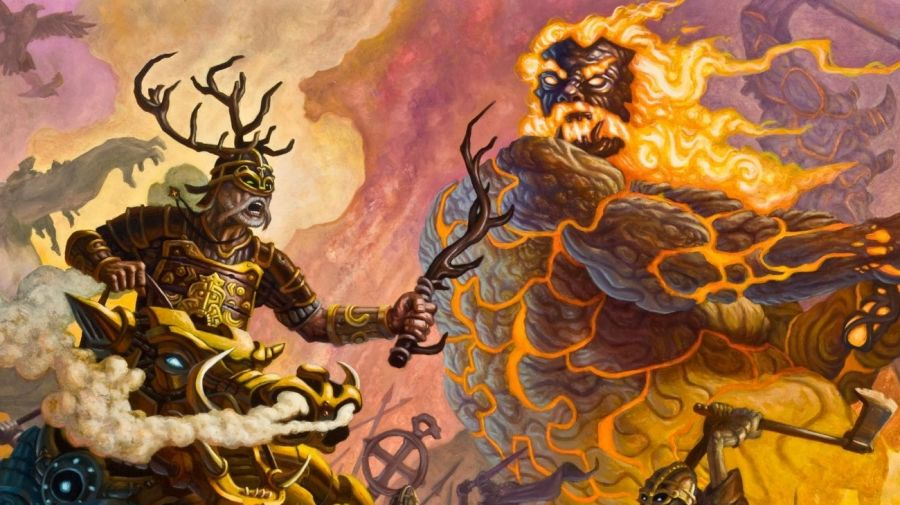

MITOLOGÍA NÓRDICA
La mitología de la religión vikinga consiste en las historias de los dioses nórdicos. Estas historias se transmitían en forma de tradiciones orales. Más tarde, hacia el siglo XIII, se escribieron algunas de estas historias, y así es como conocemos algunas de ellas hoy en día. Estas historias describen un mundo que parece muy diferente al nuestro. El cosmos se compone de nueve mundos, cada uno de los cuales está enclavado en las raíces y ramas de Yggdrasil, el árbol de la vida. Para los vikingos, los mundos más importantes eran Midgard, el mundo en el que vivían, y Asgard, el mundo en el que vivían los dioses. Pero también había un mundo de elfos, enanos, gigantes, etc.
Los vikingos adoraban a los dioses de Asgard, liderados por Odín, que también creó el universo, incluida la humanidad. Era el progenitor de la mayoría de los dioses, por lo que se le llamaba el Padre de todo. Odín era el dios de la guerra, la sabiduría y la realeza, lo que refleja las cosas que eran importantes para los vikingos. También veneraban la realeza, un líder fuerte que pudiera unir a los guerreros para proteger sus hogares y ganar dinero con las incursiones. A diferencia de los estados modernos, no se trataba de un único rey vikingo. Un hombre era el rey de lo que podía controlar.
Los vikingos creían que el martillo de Thor también se utilizaba para sellar acontecimientos importantes como matrimonios, nacimientos y muertes. Estos acontecimientos suelen dar lugar a nuevas alianzas y estructuras sociales, que deben ser aceptadas por todos. Este era el propósito del sellado. Es importante señalar que Freya no formaba parte de la raza de dioses Aesir que descendían de Odín. En realidad era de otra raza de dioses, los Vanir. Fue enviada por amor a Asgard con los Aesir tras la guerra Aesir-Vanir, como rehén. Pero esto no fue un problema para los vikingos. No adoraban a una línea particular de dioses por razones dogmáticas. Adoraban a aquellos seres que consideraban que podían ayudarles y marcar la diferencia en sus vidas.
RITUALES
Los propios vikingos nunca registraron los detalles de sus actividades rituales, ya que era una práctica cotidiana que los padres enseñaban a sus hijos, junto con actividades como la cocina y el cuidado de los animales. Algunas fuentes cristianas proporcionan información sobre los rituales, pero estos documentos fueron escritos a menudo con el propósito explícito de presentar el paganismo nórdico bajo una luz negativa.
Lo que sí sabemos por las sagas es que los sacrificios de animales a los dioses y los festines eran prácticas habituales, como en otras religiones paganas, por ejemplo la de la antigua Roma. Los vikingos no parecen haber necesitado un sacerdote especial para llevar a cabo estos rituales. Suelen estar dirigidas por la persona de mayor estatus presente en la reunión. En nórdico antiguo existen palabras para designar a los sacerdotes, gothi para los hombres y gydja para las mujeres. Pero parece que eran títulos que adoptaban cuando realizaban esta tarea. Los individuos no eran sacerdotes todo el tiempo.
La religión vikinga también tenía practicantes de la magia. Los vikingos creían que los seres humanos podían aprender a practicar la magia, que también era practicada por los dioses. Freya era considerada una maga excepcional, y enseñó esta habilidad a Odín. Los vikingos creían que las runas, su alfabeto, eran una poderosa herramienta para esta magia. En las sagas, a menudo oímos hablar de héroes que utilizan las runas para curar una enfermedad o debilitar a un enemigo. Las mujeres que practicaban esta magia eran conocidas como Volva, y los hombres como Seidmadr, aunque el arte se consideraba femenino y las practicantes eran más aceptadas que sus homólogos masculinos. Su práctica se centraba principalmente en la adivinación y la interpretación de los presagios.
VIDA DESPUÉS DE LA MUERTE
Otro rasgo de la religión de los antiguos escandinavos es la creencia común en la vida después de la muerte, que continúa de alguna forma tras el fallecimiento. La creencia más conocida de los vikingos era el Valhalla. Era una sala de Odín en Asgard. Los vikingos creían que los guerreros que morían valientemente en la batalla eran llevados por las valkirias a vivir al Valhalla. Allí festejaron y vivieron en un paraíso guerrero hasta que fueron llamados a luchar de nuevo en la batalla final del Ragnarok, el apocalipsis vikingo.
Los que no murieron en la batalla se encontraron con una variedad de vidas posteriores, algunas parecidas a la vida en Midgard, otras muy diferentes. El más famoso es Helheim, un lugar que se asemeja a la versión cristiana del infierno, aunque no sólo los malos acaban allí. Sin embargo, hay que tener en cuenta que sólo conocemos Helheim a través de fuentes cristianas, y sus descripciones están probablemente muy influenciadas por las ideas cristianas.
DESTINO
La idea del Ragnarok refleja la creencia vikinga en el destino. Los vikingos creían que el destino de todos los hombres ya estaba escrito. Tenían su propia versión del destino, los Norns, que escribían el destino de los hombres en la corteza del Yggdrasil mediante runas.
Pero la profecía del Ragnarok muestra que los dioses también tenían un destino inevitable. Odín escucha la profecía de un Volva, que describe el fin del mundo y la muerte de los dioses.
ASATRU
¿Pero no hay seguidores de la religión nórdica antigua en la actualidad? Sí, es probable que haya personas que hayan conservado al menos algunos elementos de la religión nórdica antigua durante siglos.
En la década de 1970, el interés popular por esta religión creció de forma significativa y el término Asatru se estableció en Islandia para referirse a las personas que creen en los dioses nórdicos antiguos y basan sus prácticas espirituales en la mitología nórdica, al igual que los vikingos.
Es un término oficial utilizado en el censo de Islandia, pero también se utiliza de manera menos formal en todo el mundo. ¿Qué opina del Asatru moderno? ¿Cómo se compara con la religión nórdica de los vikingos?
CRISTIANISMO
La práctica generalizada de la religión nórdica antigua terminó del mismo modo que muchas religiones en Europa, con la difusión del cristianismo. Los vikingos empezaron a tener contacto con los cristianos desde principios del siglo VIII. En aquella época, los cristianos no debían comerciar con los paganos y pensaban que los vikingos debían someterse a algún tipo de conversión para convertirse en socios comerciales.
Esto llevó a muchas conversiones de nombre, pero las verdaderas conversiones siguieron con el tiempo. El primer rey vikingo del que se tiene constancia que se bautizó en serio fue Harald Bluetooth de Dinamarca, hacia el año 950.
Pero no existe una fecha precisa para la adopción del cristianismo por parte de los vikingos. El registro arqueológico muestra que las cruces cristianas y los amuletos del martillo de Thor se producían y usaban al mismo tiempo. En las iglesias construidas hasta el siglo XII se pueden ver mezcladas imágenes nórdicas antiguas y cristianas. Pero con el tiempo, el cristianismo se impuso como sucesor, y las prácticas nórdicas antiguas fueron abandonadas, absorbidas por el cristianismo o practicadas sólo en privado.